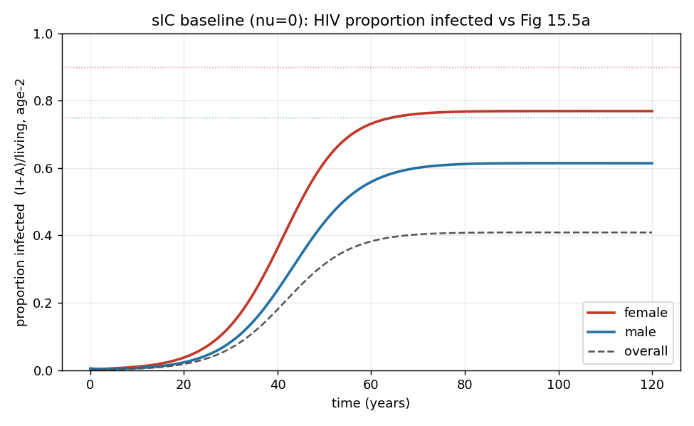
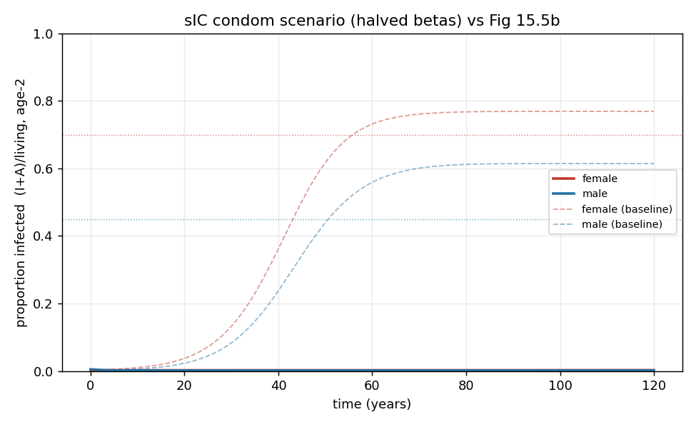
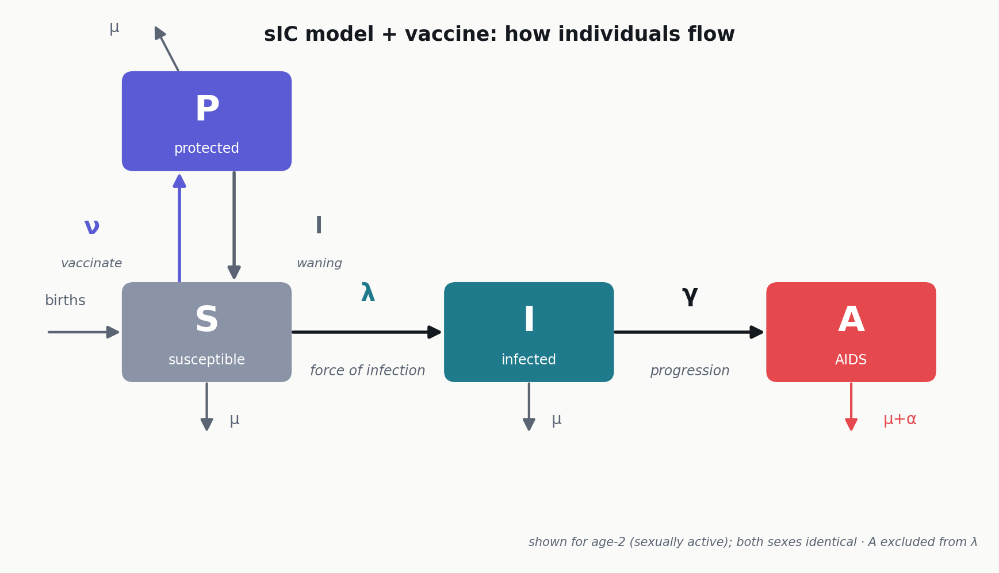
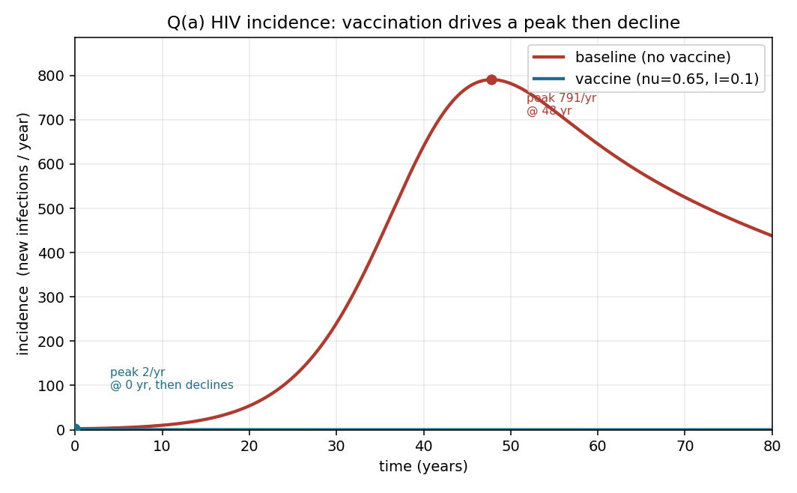
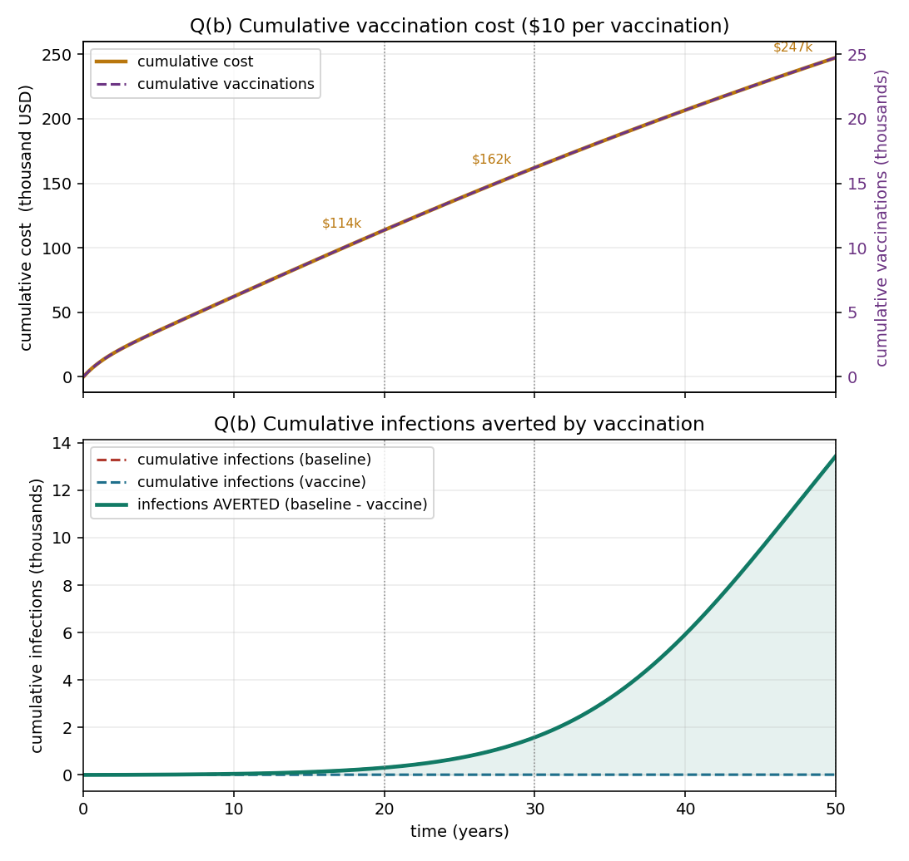
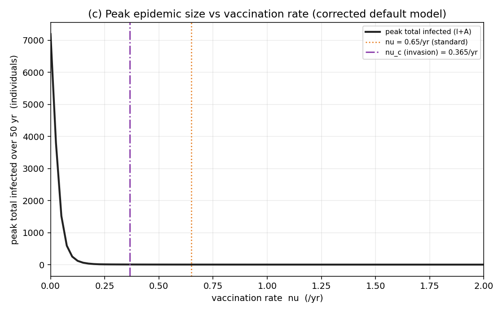
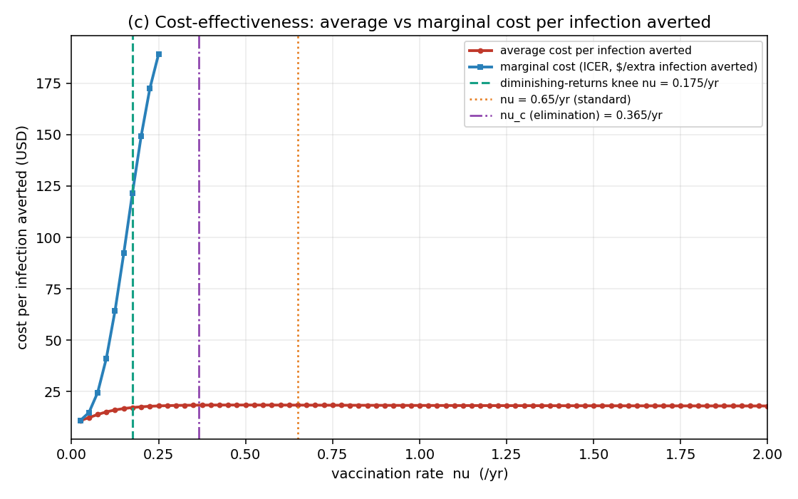
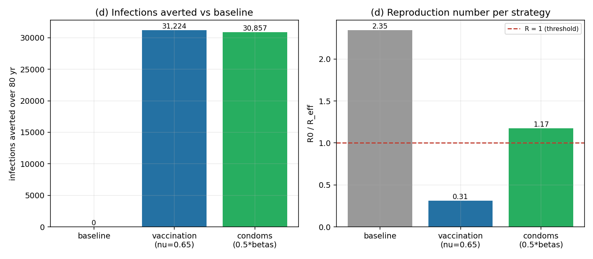

HIV Vaccination on the sIC AIDS Model
A compartment-model study of epidemic control, cost, and intervention choice.
Can a vaccine bend an endemic epidemic?
In this model HIV is S → I → AIDS with births, so the infection persists endemically — it never burns out on its own.
Will a vaccine make the epidemic peak then decline?
What does the vaccination program cost?
What is the optimum vaccination rate?
Vaccination vs. safe-sex / condoms — which controls it better?
The sIC model: {S, I, AIDS} × sex × age
Parameters & the endemic plateau
Key idea Transmission is asymmetric (βmf > βfm) so women are infected more — and births continually refill susceptibles, driving an endemic plateau rather than burnout.
Recalibrating HIV→AIDS progression
- The textbook's literal γ = 1.16/yr means HIV→AIDS in under a year → R₀ = 0.24 < 1 → no epidemic.
- Biologically, HIV→AIDS takes ~8–10 years.
- We use γ = 0.1/yr → R₀ ≈ 2.35.
Key message A corrected, biologically grounded γ is required for the model to behave like a real epidemic.

Calibrated against the published sIC model
- Baseline reproduces the textbook: growth to a high endemic plateau.
- Female prevalence (0.77) above male (0.62).
- Condom scenario (halving both β) sharply suppresses it.
Key message The model is calibrated and behaves like the published sIC model before we add a vaccine.

A “take”-with-waning vaccine
- Add protected adults Pf2, Pm2; vaccinate susceptible adults at ν = 0.65/yr (≈ Garnett 2002 “65% coverage”).
- Protection wanes at l = 0.1/yr (≈ 10-year mean).
- Ceiling: at most ν/(ν+l) = 0.87 of adults are ever protected.
- Cost tracked via dV/dt = ν(Sf2+Sm2).
Key message Protected people stay in the partner pool, so vaccination dilutes the infected fraction — this is what produces herd immunity.

Does the vaccine make it peak then decline?
- Under ν = 0.65, the effective reproduction number drops to Reff ≈ 0.31 < 1.
- HIV incidence declines from the very start.
- The untreated baseline instead peaks at 791 new infections/yr around year 48.
Answer Yes — vaccination turns sustained growth into immediate decline.

What does it cost?
- At $10 per vaccination: cumulative cost ≈ $162k by year 30 (≈ $4,070/yr at steady state).
- About $102 per infection averted at 30 years.
- Within the $110–390 range of the Imperial-College / Stover analyses.
Key message Cost-per-infection-averted is the transferable metric — absolute $ scale with this small synthetic population.

Optimum rate — the elimination threshold
- A critical rate νc ≈ 0.37/yr drives the epidemic to elimination above it.
- Matches herd immunity: νc = l·pc/(1−pc) with pc = 1 − 1/R₀ ≈ 0.574.
- The standard ν = 0.65 sits comfortably above νc.

Optimum rate — best value vs. elimination
- Epidemiological optimum: eliminate the epidemic, ν ≥ νc.
- Cost-effective optimum: best value — a diminishing-returns knee near ν ≈ 0.18/yr.
Key message “Control the epidemic” and “best value for money” are not the same target.

Which controls it better?
- Vaccination (ν=0.65) → Reff=0.31, averts ≈31,224 infections, explicit cost ≈$349k.
- Condoms (halving β) → R₀=1.17 (just above threshold), averts ≈30,857, no priced cost here.
Key message Essentially a tie on epidemiological outcome; they differ on cost basis and the vaccine's waning ceiling — no single winner is claimed.

Takeaways
- A waning vaccine at ν=0.65 drives Reff<1 and makes the epidemic decline.
- It is cost-effective — about $102 per infection averted.
- It is comparable to condom promotion on epidemiological outcome.
- Conclusions hold above the herd-immunity threshold νc ≈ 0.37/yr.
Limitations
- γ recalibrated from the implausible literal textbook value.
- Results are sensitive near the R₀ threshold, so condoms vs. vaccine is a close call.
- Small synthetic population — use cost-per-infection-averted, not absolute $.
- A single operating point was analysed, not a full sweep of every parameter.
- The herd-immunity result depends on keeping protected people in the partner pool.
Thank you.
Questions?
Recap: R₀ ≈ 2.35 → with ν = 0.65, Reff ≈ 0.31 < 1.
李傳漢 (Chuan-Han Li) · B11611027 — BME5113 Biological Systems Modeling & Analysis · Term Project, Part 2